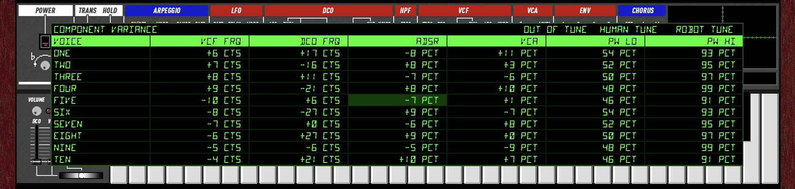
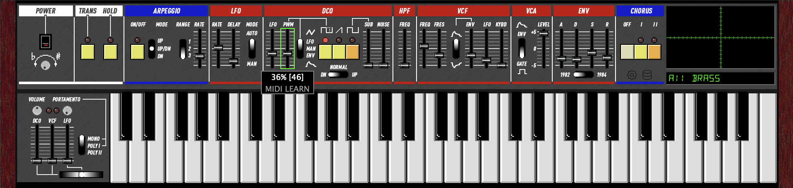

User's Guide
Controls

Slider Tips
- Hold Shift while dragging for 10x finer control.
- Hold Cmd (Mac) or Ctrl (Windows/Linux) for 100x superfine control.
- Double-click a slider to type a value directly.
- Right-click a slider for MIDI Learn.
Power & Tuning
Power Turns the synth on and off. All voices are silenced when off.
Tuning Fine-tune the master pitch ±100 cents. The knob has a center detent at 0 cents (1 pixel = 1 cent). MIDI CC values 63 and 64 both map to exactly 0 cents.
Performance
Master Volume Output level. The red LED indicates clipping.
Portamento Rate Glide speed between notes.
Portamento Mode 3-way switch: Off (polyphonic), Poly I (portamento, last-note priority), Poly II (portamento, low-note priority).
Bender
Lever Horizontal pitch bend. Push up to trigger LFO vibrato (mod wheel).
DCO / VCF / LFO Sensitivity sliders control how much the bender affects pitch, filter cutoff, and LFO depth.
Arpeggiator
Transpose When lit, clicking a key sets the transpose root instead of playing a note. Click C to reset.
Hold Notes sustain after release. Click a held key again to release it individually.
Arpeggio Activates the arpeggiator. Held notes are arpeggiated automatically.
Mode Up, Up/Down, or Down.
Range 1 octave, 2 octaves, or 3 octaves (Full).
Rate Arpeggio speed.
LFO
Rate LFO speed.
Delay Time before LFO fades in after a note is played.
Mode Free-running or key-triggered (LFO resets on each note).
DCO (Digitally Controlled Oscillator)
LFO Pitch modulation depth from the LFO (vibrato).
PWM Pulse width modulation depth.
PWM Mode LFO (modulated by LFO), Manual (fixed pulse width from slider), or Envelope.
Pulse / Saw / Sub Toggle oscillator waveforms on or off. Sub is one octave below.
Octave Horizontal switch: 4', 8', or 16' octave range.
Sub Level Sub-oscillator volume.
Noise White noise level mixed into the oscillator.
HPF (High-Pass Filter)
Freq 4-position high-pass filter. Removes low-frequency content to thin out the sound.
VCF (Voltage Controlled Filter)
Freq Filter cutoff frequency.
Res Resonance. At maximum the filter self-oscillates.
Env Polarity Positive or inverted envelope modulation.
Env How much the envelope opens the filter.
LFO Filter cutoff modulation from the LFO (wah effect).
KBD Keyboard tracking. Higher notes open the filter more.
VCA (Voltage Controlled Amplifier)
Mode Gate (organ-style on/off) or Envelope (shaped by ADSR).
Level Overall voice volume before chorus and master output.
Envelope (ADSR)
Attack Time to reach full level.
Decay Time to fall from peak to sustain level.
Sustain Level held while the key is down.
Release Time to fade to silence after key release.
ADSR Mode Horizontal switch below the sliders. Left is 60 mode (analog RC envelopes). Right is 106 mode (firmware envelopes).
Chorus
Off Bypass chorus.
I Chorus I: subtle, slow modulation.
II Chorus II: wider, faster modulation. Both I and II can be enabled together.
Keyboard

Click the on-screen keyboard to play notes. Drag across keys for legato.
QWERTY Keyboard
When the plugin window has focus, the computer keyboard plays notes in a standard two-octave piano layout. Open Keyboard Shortcuts from the right-click menu to see the full mapping.
| Keys | Action |
|---|---|
| Z X C V B N M , . / | Lower octave naturals (C D E F G A B C D E) |
| S D G H J L ; ' | Lower octave sharps (C# D# F# G# A# C# D# F#) |
| Q W E R T Y U I O P [ ] | Upper octave naturals (C D E F G A B C D E F G) |
| 2 3 5 6 7 9 0 - = | Upper octave sharps (C# D# F# G# A# C# D# F# G#) |
| ` / 1 | Octave down / up |
| ← → | Cycle scope modes |
| ↑ ↓ | Previous / next preset |
| PgUp PgDn | Skip 8 presets |
| Enter | Open patch selector grid |
Scope

The oscilloscope in the upper right. A nav bar at the bottom shows the current mode name and < > buttons to cycle between modes. ← → arrow keys also cycle forward and backward.
- Waveform Triggered oscilloscope showing the raw audio output. The nav bar shows peak level in dB. Drag up/right to increase master volume, down/left to decrease.
- Spectrograph Frequency spectrum analyzer (logarithmic). Also shows dB level. Drag to adjust master volume.
- Envelope Graphs the current ADSR envelope shape in real time. Drag the vertical boundary lines left/right to adjust Attack, Decay, and Release times. Drag the horizontal sustain segment up/down to adjust Sustain level. The cursor changes to a resize arrow when hovering over a draggable target.
- VCF Graphs the filter frequency response (normalized to 0 dB at DC). The nav bar shows the cutoff frequency. Click or drag to set VCF frequency (horizontal) and resonance (vertical) directly.
- Patch Bank A 16x8 grid of all 128 presets. Click a cell to load a preset. Drag from a cell and release to launch a bouncing ball that changes presets as it travels.
- About Version and credits.
Patch Bank

The KR-106 includes 256 factory presets across two banks. In 106 mode, 128 presets decoded from original Juno-106 factory SysEx data. In 60 mode, 128 presets from the original Juno-60 factory tape backups. Switching modes changes the visible preset bank and sets the display to Manual and remaps sliders so VCF FRQ stays at the same Hz. The current preset name is shown below the scope.
Browsing
Left-click the preset display to open the patch selector, a full grid showing all 128 presets. Click any patch to load it. You can also use the arrow keys or mouse wheel to step through presets.
Type to search: With the preset grid open, start typing to filter presets by name. Non-matching presets dim. Arrow keys skip dimmed entries (left/right scans linearly, up/down stays in the same column). Backspace deletes characters. Escape clears the search (press again to close). Enter selects the highlighted preset and closes the grid.
Patch Manager
The database icon to the left of the preset display opens the patch manager menu:
- Save Patch Save the current sound to any slot. A dialog lets you choose the bank (A/B), group (1-8), patch (1-8), and name.
- Clear Patch Reset the selected slot to an init patch.
- Load Patch Bank Load a CSV patch bank file.
- Reveal in Finder Open the preset storage folder.
Right-Click
Right-click the preset display for the same patch manager menu.
What's Saved
Presets save all synthesis parameters. Performance controls (Tuning, Transpose, Hold, Arpeggio, Arp Rate, Arp Mode, Arp Range, Portamento) are not saved with presets and persist independently so you can change sounds without interrupting a live performance.
Settings

Click the gear icon or right-click anywhere on the panel background to access these options:
- 100% / 150% / 200% / 300% Window scale. Your choice is saved between sessions.
- 6 / 8 / 10 Voices Maximum polyphony. More voices use more CPU.
- Ignore MIDI Velocity All notes play at full velocity, like the original hardware.
- Limit Arp to Keyboard Range Arpeggio wraps notes back into the 61-key range instead of extending beyond it.
- Sync Arp to Host When on, the arpeggiator locks to the DAW's tempo. The Arp Rate slider snaps to note divisions (4 Beats, 2 Beats, Quarter, Quarter Triplet, Eighth, Eighth Triplet, 16th, 16th Triplet, 32nd). Steps align to the beat grid when the transport is playing. When the transport is stopped, the arp free-runs at the tempo-matched rate. If the host does not provide tempo information, sync is silently disabled and the arp falls back to the rate slider. Compatible with LV2 hosts (Jalv/Zynthian) that send transport updates only on state changes.
- Sync LFO to Host When on, the LFO rate locks to the DAW's tempo. The LFO Rate slider snaps to note divisions (24 Beats down to 64th Note). The LFO phase resets when the transport starts. When both Arp and LFO are synced, their rates lock to exact multiples of each other.
- Mono Retrigger When on (default), every new note in mono mode retriggers the envelope. When off, legato notes glide without retriggering.
- MIDI Out: SysEx Selects the MIDI output format. When off (default), the plugin sends standard MIDI CC for parameter changes and Program Change for preset selection. When on, it sends Roland Juno-106 SysEx (IPR for individual parameters, APR for preset dumps). The plugin always receives CC, SysEx, and Program Change regardless of this setting.
- VCF Oversample Off / 2x / 4x Filter oversampling factor. 4x (default) gives clean self-oscillation tracking up to 20 kHz. 2x uses less CPU but may alias at high cutoff + high resonance. Off disables oversampling entirely (lowest CPU, may be unstable at high resonance).
- Component Variance Opens the per-voice variance editor. See below.
- Keyboard Shortcuts Shows a diagram of the QWERTY keyboard layout for playing notes.
Component Variance

Real analog polysynths have slight differences between voices due to component tolerances. Each VCF, VCA, and ADSR circuit is built from discrete parts that are never perfectly matched. The variance editor lets you control these per-voice offsets to dial in exactly how much analog character you want.
Noise & Drive Controls
The top row provides global noise and saturation controls:
- ANALOG Broadband analog noise floor level (0% = silent, 50% = unity, 100% = 4x).
- MAINS Mains hum (120/240/360 Hz harmonics) level.
- CLOCK BBD clock feedthrough noise level.
- BBD DRIVE Saturation drive on the chorus BBD input. Higher values add subtle compression on loud signals. 0% disables saturation entirely.
Per-Voice Parameters
- VCF FRQ Filter cutoff offset in cents (±10 cts).
- DCO FRQ Oscillator pitch offset in cents (±30 cts).
- ADSR Envelope timing scale as a percentage (±15 pct).
- VCA Amplifier gain offset as a percentage (±12 pct).
- PW Lo Pulse width minimum (around 50 pct).
- PW Hi Pulse width maximum (around 95 pct).
Editing
Click a cell to select it, then drag up/down to adjust. Arrow keys also work: up/down to change the value, left/right to move between columns. 100 pixels of drag covers the full range of each parameter.
Tune Presets
- Robot Tune All components at spec. Every voice is identical. Clean and precise. Also zeros all noise and BBD drive controls.
- Human Tune Subtle randomized offsets (1/5 of full range). A well-maintained unit.
- Out of Tune Full random variance. A synth that's been sitting in a garage for 40 years.
Variance values are saved globally and persist between sessions. On first launch, a deterministic set of offsets is generated to model one specific "hardware unit."
MIDI

MIDI Learn
Right-click any slider, knob, switch, or button to enter MIDI Learn mode. The tooltip shows "MIDI LEARN" and a green border appears around the control. Move any CC on your MIDI controller to assign it. The assignment is saved between sessions.
Multiple parameters can share the same CC. For example, assign Decay and Release to the same knob to control both in sync.
Tab advances MIDI Learn to the next control. Shift+Tab goes backward. [ and ] also navigate forward and backward. Left-click any control to cancel MIDI Learn mode.
To reassign, right-click the slider again and send a new CC. Click anywhere else to cancel learn mode.
MIDI Mapping
All values 0-127, mapped to the parameter's full range. The UI slider moves to reflect incoming values.
The KR-106 accepts both standard MIDI CCs and original Roland Juno-106 SysEx messages (F0 41 32 0n cc vv F7).
Pitch bend is received on the standard pitch wheel and reflected in the bender control.
If you assign a parameter to a CC via MIDI Learn, the user assignment replaces that parameter's default CC.
| Parameter | CC | SysEx | Notes |
|---|---|---|---|
| LFO Rate | 80 | 00 | |
| LFO Delay | 81 | 01 | |
| DCO LFO | 3 | 02 | |
| DCO PWM | 79 | 03 | |
| DCO Noise | 13 | 04 | |
| VCF Frequency | 74 | 05 | Standard brightness / cutoff |
| VCF Resonance | 71 | 06 | Standard resonance |
| VCF Env Mod | 76 | 07 | |
| VCF LFO Mod | 77 | 08 | |
| VCF Keyboard | 78 | 09 | |
| VCA Level | 0A | ||
| Master Volume | 7 | Standard channel volume | |
| ENV Attack | 73 | 0B | Standard attack time |
| ENV Decay | 75 | 0C | Standard decay time |
| ENV Sustain | 70 | 0D | |
| ENV Release | 72 | 0E | Standard release time |
| DCO Sub | 9 | 0F | |
| HPF Freq | 12 | 11 b3-4 | 4-position switch: 0-31=0, 32-63=1, 64-95=2, 96-127=3 |
| Portamento Rate | 5 | Standard portamento time | |
| Arp Rate | 82 | ||
| Modulation | 1 | LFO trigger on/off (switch) | |
| Hold | 64 | Sustain pedal (standard) |
SysEx Switch Bytes
Controls 0x10 and 0x11 are bitmask switch bytes that set multiple parameters at once.
| Control | Bit | Parameter | Values |
|---|---|---|---|
| 10 | 0 | Octave 16' | 1 = on |
| 10 | 1 | Octave 8' | 1 = on |
| 10 | 2 | Octave 4' | 1 = on |
| 10 | 3 | Pulse | 1 = on |
| 10 | 4 | Saw | 1 = on |
| 10 | 5 | Chorus | 0 = on, 1 = off |
| 10 | 6 | Chorus Level | 0 = II, 1 = I |
| 11 | 0 | PWM Mode | 0 = LFO, 1 = Manual |
| 11 | 1 | VCF Env Polarity | 0 = +, 1 = - |
| 11 | 2 | VCA Mode | 0 = ENV, 1 = GATE |
| 11 | 3-4 | HPF | 00 = 3, 01 = 2, 10 = 1, 11 = 0 |
SysEx
The KR-106 sends and receives Roland Juno-106 SysEx messages. Enable MIDI Out: SysEx in the settings menu to send SysEx output (off by default). When enabled, individual parameter changes are sent as IPR (Individual Parameter) messages: F0 41 32 0n cc vv F7 where n is MIDI channel, cc is the control number from the table above, and vv is the value (0-127). When disabled, standard MIDI CC is sent instead. The plugin always receives both CC and SysEx regardless of this setting.
APR (All Parameter Report)
In SysEx mode, a full patch dump is emitted on every preset change. In CC mode, a Program Change is sent instead. APR messages can always be received to load a complete patch. The format is 24 bytes:
F0 41 30 0n pp [16 sliders] [sw1] [sw2] F7
0nMIDI channel (0-F)ppPatch number (0-127)- Bytes 5-20: 16 slider values (0-127) in SysEx control order (00-0F from the table above)
- Byte 21 (sw1): Octave (bits 0-2: 01=16', 02=8', 04=4'), Pulse (bit 3), Saw (bit 4), Chorus off (bit 5), Chorus I (bit 6)
- Byte 22 (sw2): PWM Manual (bit 0), VCF Env- (bit 1), VCA Gate (bit 2), HPF (bits 3-4: inverted, 00=3, 01=2, 10=1, 11=0)
This is compatible with the original Juno-106 APR format, allowing two KR-106 instances to stay in sync or a hardware Juno-106 to mirror the plugin's state.
60 vs 106 Mode
The KR-106 models both the analog signal path (60 mode) and the firmware-controlled signal path (106 mode). They share the same panel layout and basic architecture, but the internal control paths are fundamentally different. Select the mode with the switch below the ADSR sliders. Each mode has its own bank of 128 factory presets.
VCF Frequency
60: The VCF cutoff slider drives an analog CV that feeds the IR3109 exponential converter directly. The slider-to-frequency curve follows the analog pot taper and expo converter characteristics. Modulation (envelope, LFO, keyboard tracking) sums into the same CV in continuous analog fashion. Range: ~2 Hz to 40 kHz. Keyboard tracking references C1 (32.7 Hz).
106: The slider value is digitized to a 7-bit byte (0-127), scaled to a 14-bit DAC value, and summed with envelope, LFO, and keyboard tracking in integer arithmetic inside the firmware. The result is output through a DAC and smoothed by a 1ms RC filter. The firmware runs a main loop at 238.1 Hz (4.2ms per tick), so the VCF cutoff updates in discrete steps rather than continuously. Range: ~5 Hz to 50 kHz. Keyboard tracking references middle C (MIDI 60).
When switching modes, the VCF frequency slider is automatically remapped to preserve the same frequency in Hz on the new curve.
Envelope (ADSR)
60: Pure RC charge/discharge curves from the IR3R01 analog envelope generator. Attack charges toward an overshoot target (1.2x) via an exponential RC curve, giving a natural concave shape. Decay and release are exponential RC discharges. Timing is calibrated from hardware measurements. Range: Attack 1ms-3s, Decay/Release 3ms-22s.
106: The D7811G firmware generates the envelope as a 16-bit integer accumulator, updated at 238.1 Hz. Attack adds a fixed increment per tick, producing a linear ramp. Decay and release use a per-tick multiply (coefficient from a ROM table), giving a staircase-approximated exponential. A 1ms RC output filter smooths the steps. Range: Attack 1ms-3.3s, Decay/Release ~1.5ms-25.5s.
Slider Ranges
Several parameters have different effective ranges between modes because the analog circuits and firmware interpret the same slider position differently:
- LFO Rate: 60 uses a circuit model (TA75558S integrator + Schmitt trigger, 0.14-21 Hz). 106 uses the firmware's rate table.
- DCO LFO Depth: 60 models the 10K shunt-to-ground on a 50K linear pot (analog taper). 106 uses a linear mapping.
- VCF LFO Depth: Same difference (analog vs linear).
- VCF Frequency: Different slider-to-Hz curves as described above.
Other Differences
- Pulse polarity: 60 mode has the narrow LOW portion at the start of the ramp. 106 mode's inverted comparator places it at the end. Both produce 50%-97% duty cycle, but the phase relationship with the saw differs.
- Keyboard tracking: 60 mode taps the pitch CV (includes octave switch). 106 mode uses the raw MIDI note (octave switch does not affect VCF).
Preset Banks
Each mode has its own bank of 128 factory presets. 60 mode includes patches from the original Juno-60 factory tape backups (Bank A: 56 named patches covering strings, brass, keyboards, organs, synth leads, and effects; Bank B: factory tape preset names). 106 mode includes all original Juno-106 patches decoded from factory SysEx data. Switching modes changes the visible preset bank and sets the display to Manual.